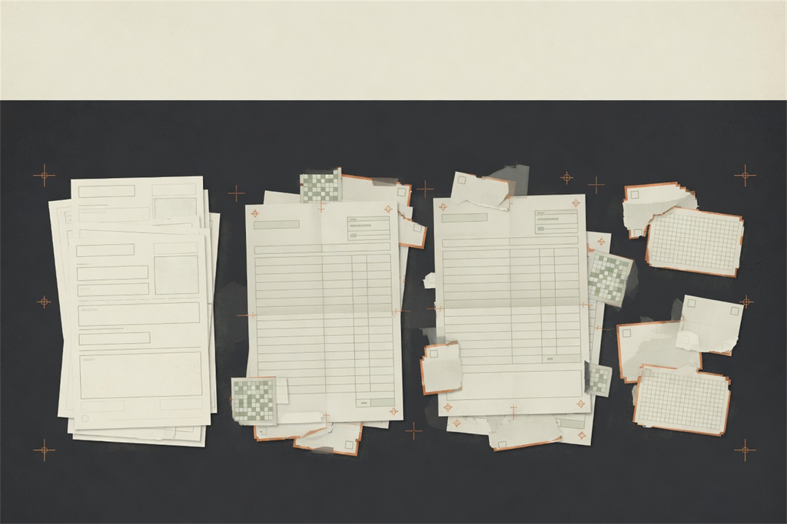
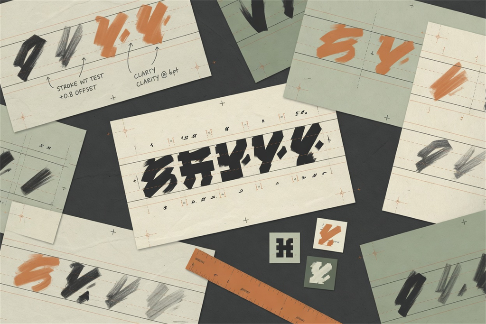

#
模組包翻譯工具
把整合包文字整理成台灣繁中。
##
翻譯整合包
選好遊戲實例與輸出位置，剩下的交給工具處理。

>
工具只讀取語言檔，不會改動 mods/*.jar。
你在 CurseForge、Modrinth、Prism Launcher 等啟動器實際遊玩的資料夾。
工具會在這裡建立 翻譯結果/。
會先自動偵測，也可以手動指定。
尚未選擇遊戲實例###
翻譯方式
AI：正在確認可用方式
AI 為選用功能；已有中文的內容仍會先做台灣用語轉換。
Discord 尚未驗證
使用開發者提供的 API 前，請先登入並加入 ZeitFrei 官方伺服器。
瀏覽器沒有自動開啟時，可複製這個登入網址。
Cloudflare 尚未驗證
Discord 資格確認後，再完成一次安全驗證。
自訂 API 設定
ⓘ用啟動器建議的位置會直接覆蓋安裝到遊戲（套用前先備份、可一鍵還原），不另建資料夾；勾「打包檔」才會另存一份可分享的檔案。請在 Minecraft 關閉時套用。
#
字體資源包
這是獨立服務：把你喜歡的字體一鍵放進 Minecraft。

>
選一個你有權使用的 .ttf、.otf 或 .ttc，工具會建立可放進 resourcepacks 的資源包。
支援 TTF、OTF、TTC。
會建立在這個位置的 翻譯結果/resourcepacks。
##
字體設定
輸出前可隨時重建進階說明
字重感是 Minecraft 字體 renderer 的近似調整，不會改寫 TTF/OTF 的原始筆畫。如果要真正變粗或變細，請選用對應字重的字體檔，例如 Regular、Medium 或 Bold。
建立後會同時寫入 default.json 與 uniform.json，讓一般文字和 Unicode 文字都能使用。
ⓘ字體檔只會被複製進資源包，不會修改原始字體檔。